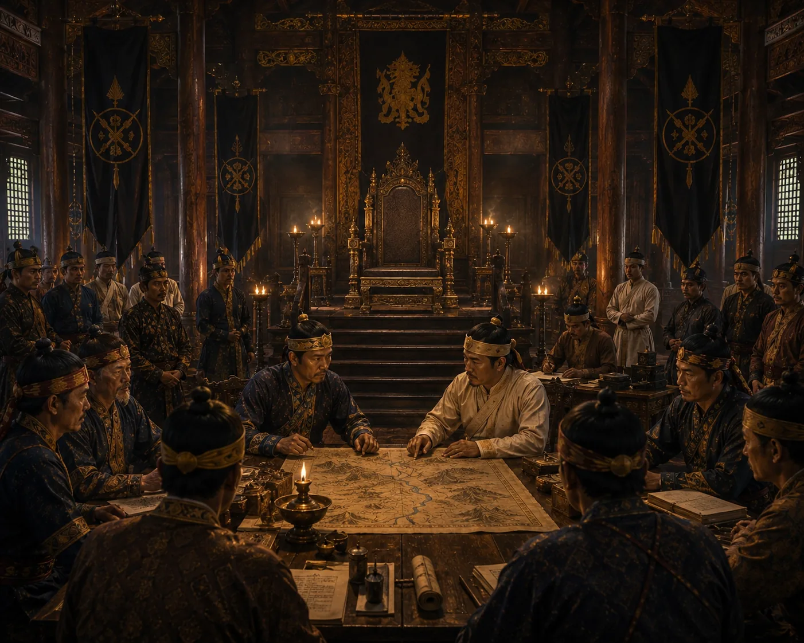

Second Ministerial Interregnum
1389–1397 · The coming of Sukaphaa

Ministers Burhagohain and Borgohain hold executive power for eight years following the assassination of Tyao Khamti while searching for the exiled royal prince.
Wikipedia counts three interregnums (1364–1369, 1376–1380, 1389–1397), so this is the third.
Sources have not yet been catalogued for this record.
People: